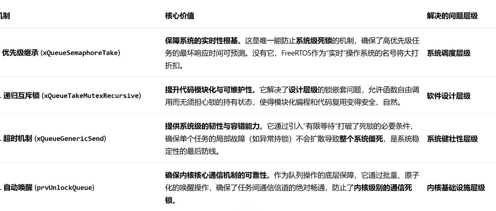

品一品freertos的防死锁机制
一、引言：FreeRTOS的防死锁机制
目录
一、引言：FreeRTOS 的防死锁机制
二、FreeRTOS 核心防死锁机制及函数解析
1 优先级继承机制 —— 解决优先级反转死锁（xQueueSemaphoreTake）
1.1 优先级继承核心操作（vTaskPriorityInherit）
1.2 信号量 / 互斥锁可用性判断
1.3 互斥锁特有逻辑
1.4 等待超时处理
2 递归互斥锁机制 —— 解决自我死锁（xQueueTakeMutexRecursive）
2.1 递归锁机制总结
2.2 递归锁执行流程示例
3 超时机制 —— 解决资源死锁（xQueueGenericSend）
3.1 超时计时器初始化
3.2 超时状态判断与处理
3.3 核心超时检测逻辑
4 自动唤醒机制 —— 解决通信死锁（prvUnlockQueue）
4.1 函数核心作用
三、全文总结
（1）四大防死锁机制的立体防御体系
（2）防死锁机制对开发的价值与意义

优先级反转 通过优先级继承机制防止。核心是利用 xQueueSemaphoreTake函数在执行时，临时提升当前持有资源（如互斥锁）的低优先级任务的优先级，使其不被中等优先级的任务抢占，从而保证高优先级任务能及时获得资源，避免形成死锁。自我死锁 通过递归互斥锁机制防止。核心是利用 xQueueTakeMutexRecursive函数，允许同一任务多次获取同一个互斥锁。其内部通过维护一个递归计数器来记录获取次数，只有在第一次获取时可能阻塞，后续的获取操作仅增加计数，从而避免了任务因等待自身已持有的锁而陷入的死锁。资源死锁 通过超时机制防止。核心体现在 xQueueGenericSend等队列操作函数中，允许为获取资源或发送数据等操作设置一个最大的等待时间。如果在该时间内未能成功，函数将超时返回，使任务得以继续执行其他逻辑或进行回退操作，而不会因无限期等待资源而导致整个系统僵死。通信死锁 通过自动唤醒机制防止。核心由 prvUnlockQueue函数实现。当队列操作完成或资源可用时，该函数会自动、批量地检查并唤醒所有在此队列或资源上等待的任务（包括等待发送和等待接收的任务），确保了因相互等待消息而产生的通信环路能被及时打破。
BaseType_t xQueueSemaphoreTake(QueueHandle_t xQueue, TickType_t xTicksToWait){Queue_t * const pxQueue = (Queue_t *)xQueue;BaseType_t xReturn = pdFALSE;BaseType_t xInheritanceOccurred = pdFALSE;/* 死循环：直到获取成功或超时退出 */for(;;){/* 进入临界区：关闭任务调度，保护队列操作 */taskENTER_CRITICAL();{/* 检查信号量/互斥锁是否可用（队列中有"消息"） */if(pxQueue->uxMessagesWaiting > (UBaseType_t)0){/* -------- 互斥锁特有逻辑 -------- */if(pxQueue->uxQueueType == queueQUEUE_IS_MUTEX){/* 关键：记录互斥锁持有者，并增加任务持有的互斥锁计数 */pxQueue->u.xSemaphore.xMutexHolder = pvTaskIncrementMutexHeldCount();/* 互斥锁是"递归的"：同一任务可重复获取，计数递增 */}/* 信号量计数减 1（核心操作：获取信号量） */pxQueue->uxMessagesWaiting--;/* 清除队列的"等待发送"任务（若有） */if(listLIST_IS_EMPTY(&pxQueue->xTasksWaitingToSend) == pdFALSE){if(xTaskRemoveFromEventList(&pxQueue->xTasksWaitingToSend) != pdFALSE){/* 触发任务调度（有更高优先级任务就绪） */queueYIELD_IF_USING_PREEMPTION();}}xReturn = pdPASS; /* 获取成功 */taskEXIT_CRITICAL(); /* 退出临界区 */break; /* 退出循环 */}else{/* 信号量不可用：处理等待逻辑 */if(xTicksToWait == (TickType_t)0){/* 不等待：直接退出 */taskEXIT_CRITICAL();xReturn = pdFALSE;break;}else{/* 挂起当前任务，加入"等待接收"列表 */vTaskPlaceOnEventList(&pxQueue->xTasksWaitingToReceive, xTicksToWait);taskEXIT_CRITICAL();/* 触发任务调度（当前任务挂起，切换到其他任务） */portYIELD_WITHIN_API();/* 任务被唤醒后，检查是否超时 */if(xTaskCheckForTimeOut(&pxQueue->xTaskTimeout, &xTicksToWait) != pdFALSE){/* 超时：清理等待状态，返回失败 */taskENTER_CRITICAL();(void)xTaskRemoveFromEventList(&pxQueue->xTasksWaitingToReceive);taskEXIT_CRITICAL();xReturn = pdFALSE;break;}}}}taskEXIT_CRITICAL(); /* 容错：确保临界区退出 */}/* -------- 互斥锁优先级继承处理 -------- */if(pxQueue->uxQueueType == queueQUEUE_IS_MUTEX){if(xInheritanceOccurred == pdTRUE){/* 恢复任务原始优先级（优先级继承仅在持有期间生效） */vTaskRestoreOriginalPriority(NULL);}}return xReturn;}
高优先级任务A（优先级10）↓ 等待互斥锁M低优先级任务B（优先级20）持有锁M↓ 被中等优先级任务C（优先级15）抢占结果：任务A被无限期阻塞（死锁状态）
具体代码解释：
（1）核心继承操作：vTaskPriorityInherit
这是实现优先级继承的核心函数，其内部逻辑简化如下：
void vTaskPriorityInherit(TaskHandle_t pxMutexHolder, UBaseType_t uxNewPriority){// 1. 记录持有者的「原始优先级」（用于后续恢复）if(pxMutexHolder->uxBasePriority == pxMutexHolder->uxPriority){pxMutexHolder->uxBasePriority = pxMutexHolder->uxPriority;}// 2. 临时提升持有者的优先级到等待者的优先级vTaskSetPriority(pxMutexHolder, uxNewPriority);}
uxBasePriority：任务的 “原始优先级”（永久保存）；
uxPriority：任务的 “当前运行优先级”（继承时临时修改）
（2）信号量 / 互斥锁可用性判断
pxQueue->uxMessagesWaiting > 0
uxMessagesWaiting 表示可用信号量数量，减 1 即 “获取”。而互斥锁本质是特殊的二值信号量，uxMessagesWaiting 为 1 表示未被持有，0 表示已被持有。（3）互斥锁特有逻辑（configUSE_MUTEXES == 1）
pxQueue->u.xSemaphore.xMutexHolder 记录当前持有互斥锁的任务句柄，用于优先级继承（避免优先级反转）。pvTaskIncrementMutexHeldCount()（4）等待超时处理
xTicksToWait > 0：xTasksWaitingToReceive 等待列表。portYIELD_WITHIN_API() 触发任务调度，当前任务挂起。BaseType_t xQueueTakeMutexRecursive(QueueHandle_t xMutex, TickType_t xTicksToWait){Queue_t* const pxMutex = (Queue_t*)xMutex;/* 检查是否已经持有该锁 */if(pxMutex->u.xSemaphore.xMutexHolder == xTaskGetCurrentTaskHandle()) {/* 递归计数增加，不实际阻塞 */(pxMutex->u.xSemaphore.uxRecursiveCallCount)++;xReturn = pdPASS;}else {/* 第一次获取，使用标准流程 */xReturn = xQueueSemaphoreTake(pxMutex, xTicksToWait);if(xReturn != pdFAIL) {(pxMutex->u.xSemaphore.uxRecursiveCallCount) = 1; // 初始化计数}}return xReturn;}
总结一下递归锁解决机制：
（1）递归计数：记录同一任务获取锁的次数
（2）同一任务免阻塞：同一任务重复获取不实际阻塞
（3）计数匹配释放：必须释放相同次数才会真正释放锁
（4）保持锁状态：只有第一次获取和最后一次释放才操作实际锁
执行流程（举例）：
任务T调用 functionA():1. xQueueTakeMutexRecursive: 计数=0 → 实际获取锁，计数=12. 调用functionB(): 计数=1 → 仅增加计数，计数=23. functionB()返回: xQueueGiveMutexRecursive: 计数=2→14. functionA()返回: xQueueGiveMutexRecursive: 计数=1→0 → 实际释放锁
BaseType_t xQueueGenericSend(QueueHandle_t xQueue,const void* const pvItemToQueue,TickType_t xTicksToWait,const BaseType_t xCopyPosition){BaseType_t xEntryTimeSet = pdFALSE; // 超时时间设置标记BaseType_t xYieldRequired; // 是否需要任务切换TimeOut_t xTimeOut; // 超时计时结构Queue_t* const pxQueue = xQueue; // 队列结构体指针/* 参数验证断言 */configASSERT(pxQueue);configASSERT(!((pvItemToQueue == NULL) && (pxQueue->uxItemSize != (UBaseType_t)0)));configASSERT(!((xCopyPosition == queueOVERWRITE) && (pxQueue->uxLength != 1)));/* 主发送循环 */for(;;){taskENTER_CRITICAL(); // 进入临界区{/* 检查队列是否有空间或允许覆盖 */if((pxQueue->uxMessagesWaiting < pxQueue->uxLength) ||(xCopyPosition == queueOVERWRITE)){traceQUEUE_SEND(pxQueue); // 跟踪发送操作(configUSE_QUEUE_SETS == 1)const UBaseType_t uxPreviousMessagesWaiting = pxQueue->uxMessagesWaiting;/* 复制数据到队列 */xYieldRequired = prvCopyDataToQueue(pxQueue, pvItemToQueue, xCopyPosition);(configUSE_QUEUE_SETS == 1)/* 如果属于队列集，通知容器 */if(pxQueue->pxQueueSetContainer != NULL){if((xCopyPosition == queueOVERWRITE) && (uxPreviousMessagesWaiting != (UBaseType_t)0)){/* 覆盖操作不通知队列集 */mtCOVERAGE_TEST_MARKER();}else if(prvNotifyQueueSetContainer(pxQueue) != pdFALSE){/* 需要任务切换 */queueYIELD_IF_USING_PREEMPTION();}}else{/* 检查是否有任务等待接收数据 */if(listLIST_IS_EMPTY(&(pxQueue->xTasksWaitingToReceive)) == pdFALSE){/* 唤醒等待接收的最高优先级任务 */if(xTaskRemoveFromEventList(&(pxQueue->xTasksWaitingToReceive)) != pdFALSE){queueYIELD_IF_USING_PREEMPTION(); // 需要立即切换}}else if(xYieldRequired != pdFALSE){/* 特殊路径：处理多互斥锁情况 */queueYIELD_IF_USING_PREEMPTION();}}taskEXIT_CRITICAL();return pdPASS; // 发送成功}else // 队列已满{if(xTicksToWait == (TickType_t)0) // 不等待{taskEXIT_CRITICAL();traceQUEUE_SEND_FAILED(pxQueue);return errQUEUE_FULL; // 立即返回队列满错误}else if(xEntryTimeSet == pdFALSE) // 首次设置超时{vTaskInternalSetTimeOutState(&xTimeOut); // 设置超时起始点xEntryTimeSet = pdTRUE; // 标记已设置}else{mtCOVERAGE_TEST_MARKER(); // 已设置过，继续}}}taskEXIT_CRITICAL();/* 挂起调度器准备阻塞 */vTaskSuspendAll();prvLockQueue(pxQueue); // 锁定队列/* 检查超时状态 */if(xTaskCheckForTimeOut(&xTimeOut, &xTicksToWait) == pdFALSE){if(prvIsQueueFull(pxQueue) != pdFALSE) // 队列仍然满{traceBLOCKING_ON_QUEUE_SEND(pxQueue);/* 将任务加入等待发送列表 */vTaskPlaceOnEventList(&(pxQueue->xTasksWaitingToSend), xTicksToWait);prvUnlockQueue(pxQueue); // 解锁队列/* 恢复调度器 */if(xTaskResumeAll() == pdFALSE){portYIELD_WITHIN_API(); // 强制任务切换}}else // 队列有空间了，重试发送{prvUnlockQueue(pxQueue);(void)xTaskResumeAll(); // 恢复调度}}else // 超时发生{prvUnlockQueue(pxQueue);(void)xTaskResumeAll();traceQUEUE_SEND_FAILED(pxQueue);return errQUEUE_FULL; // 返回超时错误}}}
这个函数讲的是队列发送，之前queue文章讲过的内容这里不再赘述，这里将其超时处理的内容摘出来。
（1）先初始化计时器：
if(xTicksToWait != (TickType_t)0) // 非阻塞模式（xTicksToWait=0）无需初始化{if(xEntryTimeSet == pdFALSE){// 核心：初始化超时结构体，记录当前系统Tick作为超时起始点vTaskInternalSetTimeOutState(&xTimeOut);xEntryTimeSet = pdTRUE; // 标记已初始化，后续循环不再重复执行}}
（2）再判断是否超时，若没有则尝试发送/插入等待队列并更新剩余时间，若超时则返回错误且释放所有资源以避免无限等待：
if(xTaskCheckForTimeOut(&xTimeOut, &xTicksToWait) == pdFALSE){// -------------------------- 未超时处理 --------------------------if(prvIsQueueFull(pxQueue) != pdFALSE) // 队列仍满，需要继续阻塞{// 将当前任务加入队列的“等待发送列表”，设置剩余超时时间vTaskPlaceOnEventList(&(pxQueue->xTasksWaitingToSend), xTicksToWait);prvUnlockQueue(pxQueue); // 解锁队列// 恢复调度器：若返回pdFALSE，表示有高优先级任务就绪，触发任务切换if(xTaskResumeAll() == pdFALSE){portYIELD_WITHIN_API(); // 强制任务切换（当前任务挂起，执行就绪任务）}}else // 队列已空（等待期间被消费），无需阻塞，重试发送{prvUnlockQueue(pxQueue);(void)xTaskResumeAll(); // 恢复调度器（忽略返回值）}}else{// -------------------------- 超时发生处理 --------------------------// 1. 解锁队列（兜底：防止队列被永久锁定）prvUnlockQueue(pxQueue);// 2. 恢复任务调度器（兜底：防止调度器卡死）(void)xTaskResumeAll();// 3. 返回超时错误（原函数中此处退出循环并返回errQUEUE_FULL）traceQUEUE_SEND_FAILED(pxQueue);return errQUEUE_FULL;}
核心超时检测：
计算已等待时间 = 当前 Tick - 起始 Tick；
若已等待时间 ≥ 剩余时间 → 返回 pdTRUE（超时），并将剩余时间置 0；
若未超时 → 返回 pdFALSE，更新剩余等待时间
当然，检测时需要锁定队列以免队列变化
4.prvUnlockQueue 队列解锁函数
static void prvUnlockQueue(Queue_t* const pxQueue){/* 必须在调度器挂起状态下调用 */taskENTER_CRITICAL();{int8_t cTxLock = pxQueue->cTxLock;/* 处理在锁定时积累的发送操作 */while(cTxLock > queueLOCKED_UNMODIFIED) {(configUSE_QUEUE_SETS == 1)if(pxQueue->pxQueueSetContainer != NULL) {if(prvNotifyQueueSetContainer(pxQueue) != pdFALSE) {vTaskMissedYield(); // 需要任务切换}}else{/* 唤醒等待接收的任务 */if(listLIST_IS_EMPTY(&(pxQueue->xTasksWaitingToReceive)) == pdFALSE) {if(xTaskRemoveFromEventList(&(pxQueue->xTasksWaitingToReceive)) != pdFALSE) {vTaskMissedYield(); // 记录需要任务切换}}}--cTxLock;}pxQueue->cTxLock = queueUNLOCKED;}taskEXIT_CRITICAL();/* 同样处理接收锁... */}
这个函数其实主要是前面函数的辅助函数，许多时候（阻塞/中断等等）我们需要锁定队列，如 xQueueGenericSend 中调用 prvLockQueue 后，队列进入锁定状态，此时若有其他任务 / 中断尝试写入 / 读取队列，无法立即唤醒等待任务，只能将 “待唤醒操作” 计数到 cTxLock/cRxLock 中，等待解锁时统一处理：
cTxLock）和接收锁（cRxLock）；以上四个函数是freertos中对抗死锁的主要机制，按照重要性用一张表总结一下它们的意义：

三、全文总结
xQueueSemaphoreTake） 捍卫了系统的实时性根本，解决了调度层面的优先级反转死锁；递归互斥锁（xQueueTakeMutexRecursive） 解放了软件设计，使模块化编程免受锁嵌套的困扰；超时机制（xQueueGenericSend） 为系统注入了容错能力，确保局部故障不会导致全局瘫痪；而自动唤醒（prvUnlockQueue） 则确保了最基础的进程间通信机制绝对可靠。最终，这些内建的防死锁机制极大地降低了嵌入式多任务开发的调试成本。开发者可以更专注于业务逻辑创新，而非深陷于底层资源竞争的泥潭。这不仅提升了软件的可靠性，更从根本上提升了开发效率